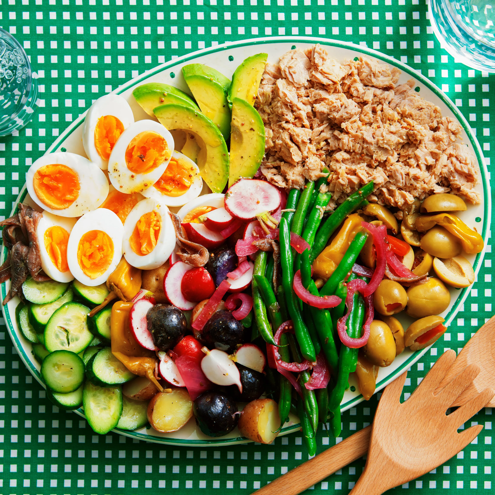

Classic Tuna Niçoise Salad Recipe
Ingredients:
- 2 cans tuna (in olive oil, drained)
- 4 small potatoes, boiled and sliced
- 2 cups green beans, blanched
- 2 cups mixed greens (lettuce, arugula, etc.)
- 2 tomatoes, sliced
- 4 hard-boiled eggs, quartered
- ½ cup black olives
- 2 tablespoons olive oil
- 1 tablespoon lemon juice
- 1 teaspoon Dijon mustard
- 1 clove garlic, minced
- Salt and pepper to taste
Instructions:
- In a small bowl, whisk together olive oil, lemon juice, Dijon mustard, garlic, salt, and pepper.
- Arrange mixed greens on a large plate.
- Top with potatoes, green beans, tomatoes, eggs, tuna, and olives.
- Drizzle with dressing and toss gently.
- Serve fresh and enjoy!